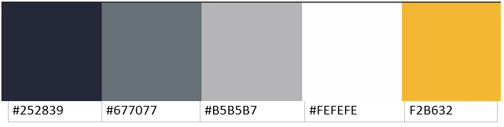
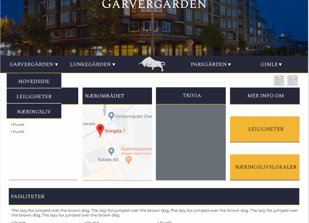

P2 Designkrav
Laget av: Vegard,Kaspar,Amund,Magnar og Patrick
Dokumentdetaljer
- P2 Prosjektkrav
- Laget av: Vegard, Kaspar, Amund, Magnar og Patrick
- Dato: 03.September 2018
Administrative detaljer
- Klient: Vivi Lunke Røhne
- Webside: Garvergården.no
- Kontaktperson: Vivi Lunke Røhne
Hensikt, Mål og Målgruppe
Hensikten med vår nettside er å sørge for at informasjon relatert til Garvergården er lett tilgjengelig for potensielle leietakere. Dette er for å minimere lengden potensielle leietakere trenger å gå for å tilegne seg informasjon om Garvergården A/S og deres underselskaper. Målet blir dermed å redusere vanskelighetsgraden og øke oversiktligheten for informasjon, slik at den potensielle leietakeren lett får tak i den informasjonen hun/han søker etter. Dette ønskes å oppnås ved å ha en intuitiv og oversiktlig nettside, med lite "kluss" og effektiv bruk av symboler for å indikere hva en gitt funksjon gjør. Dette er spesielt viktig ettersom at vår målgruppe er potensielle leietakere, hvor det er stor konkurranse og det er viktig å "kapre" personen tidlig, noe som er vanskelig dersom nettsiden er forvirrende for brukeren. I tillegg er de fleste leietakere eldre og gjerne pensjonerte, som betyr at det bør vær et fokus på intuitivitet, få forvirrende elementer og konsistent bruk av farge.
Layout og utseende
Når vi tok avgjørelser om universelt design valgte vi å fokusere på at siden skulle virke profesjonell og pålitelig, samt at den skulle være enkel og oversiktlig. Dette mente vi var viktig først og fremst siden det er en nettside for utleie av bolig og næringslivslokaler, noe som betyr at det er veldig viktig for utleieren å fremstå profesjonell og pålitelig. I tillegg vet vi at utleier foretrekker å leie ut boligene til eldre, så vi må derfor tenke ekstra mye på at siden skal være intuitiv, og enkel å navigere. Når vi valgte fonten for overskriftene (Spectral SC) ønsket vi å gå for noe med en litt klassisk, gammeldags stil som passet til selskapet lange historie, samtidig som den skulle være enkel og lett leselig så nettsiden fortsatt er oversiktlig og kan brukes av de med dårlig syn. For resten av teksten valgte vi en font (Montserrat) som skulle passe med overskriftene samtidig som den var tydelig og lesbar. Når vi valgte farger gikk vi for blå som dominant farge siden det er en farge som assosieres med pålitelighet og tillit. Vi valgte en mørk blåfarge siden vi tenkte det ville gi et mer profesjonelt og stilfullt inntrykk. Deretter valgte vi komplementærfarger til den første fargen vår for å velge ut resten av spekteret. Den gule fargen brukte vi dersom det var noe vi ønsket å framheve, i tillegg til at vi brukte den som en border på bunnen av alle blå bokser og som skillevegg i footeren. Vi brukte hvit som bakgrunn og som tekst på mørk bakgrunn. Alle fargene vi brukte er tatt fra disse fem. På all tekst har vi fokusert på å bruke farger som står i kontrast mot hverandre.

Forside: For forsiden valgte vi å bruke kort med lenker for navigasjon til
undersidene. Forsiden har også litt generell informasjon om Garvergården
Holding som familiebedrift.
Navbar: På resten av sidene har vi en sticky navbar, som enten ligger under
forsidebildet (på hovedsiden til bygningene), eller at den bare ligger på
toppen av siden fra start dersom det ikke er noe forsidebilde. Navbaren har
dropdownmeny for alle bygningene, og logoen i midten som tar deg tilbake til hjemmesiden.
Footer: På footeren gikk vi for et enkelt design med kontaktinformasjon.
Forside med kort for navigasjon.

Hovedside for bygning med navbar.
Vi har også lagd en mobilversjon av siden som vi planlegger å implementere gjennom CSS med @mediaquery. Den er designet med grunnlag i formatet 360x640 ettersom det skal være det mest vanlige. For å gjøre den mer mobilvennlig har vi flyttet ting så vi bygger mer i høyden og vi har endret enkelte deler for å ikke få så mye "clutter" på en liten skjerm. Blant annet har vi gjort om navbaren så den bare har en dropdownmeny med fire undermenyer istedenfor fire separate dropdownmenyer. I tillegg har vi endret infokortene på forsiden så man skal kunne scrolle sidelengs gjennom dem, istedenfor at alle bare ligger ved siden av hverandre.

8. fremdrifts plan
- index.html
- javaskript/
- navbar/
- dropp_down.js
- skrif_storelse
- album.js
- fade_inn.js
- garvegarden/
- info.html
- leiligheter.html
- laringsliv.html
- lunkegarden/
- info.html
- leiligheter.html
- laringsliv.html
- gimle/
- info.html
- leiligheter.html
- laringsliv.html
- Parkgarden/
- info.html
- leiligheter.html
- laringsliv.html
- img
- logo.png/li>
- garvegarden/
- bygg.jpg
- kart
- kart_info.png
- kart_leilighet.png
- kart_naringsliv.png
- album/
- Garvergarden_1.jpg
- Garvergarden_2.jpg
- Garvergarden_3.jpg
- ...
- Lunkegarden/
- bygg.jpg
- kart
- kart_info.png
- kart_leilighet.png
- kart_naringsliv.png
- album/
- Lunkegarden_1.jpg
- Lunkegarden_2.jpg
- Lunkegarden_3.jpg
- ...
- gimle/
- bygg.jpg
- kart
- kart_info.png
- kart_leilighet.png
- kart_naringsliv.png
- album/
- gimle_1.jpg
- gimle_2.jpg
- gimle_3.jpg
- ...
- Parkgarden/
- bygg.jpg
- kart
- kart_info.png
- kart_leilighet.png
- kart_naringsliv.png
- album/
- Parkgarden_1.jpg
- Parkgarden_2.jpg
- Parkgarden_3.jpg
- ...
| Fil | Beskrivelse | Ansvar | Antatt arbedismengde | Deadline | |
|---|---|---|---|---|---|
| 1 | logo.png | firmaes logo | |||
| 2 | index.html | hovedside | |||
| 3 | fade.js | ||||
| 4 | skrift_endring.js | endrer størrelse på skrift | |||
| 5 | .../info.html | css & sidestruktur for alle info-sider | |||
| 6 | .../info.html-teksten Lunkegarden gimle Parkgarden garvegarden |
generell informasjon om bygg | |||
| 7 | .../leilighet.html | css & sidestruktur for alle leilighet-sider | |||
| 8 | .../leilighet.html-teksten Lunkegarden gimle Parkgarden garvegarden |
spesifikk informasjon rettet til leietakere av leiligheter | |||
| 9 | .../naringsliv.html | css & sidestruktur for alle naringsliv-sider | |||
| 10 | .../naringsliv.html-teksten Lunkegarden gimle Parkgarden garvegarden |
spesifikk informasjon rettet til naringslivet | |||
| 11 | album.js | programmet skal henter relevante bilder og lager ett album av disse | |||
| 12 | Kart.js | bildet av ett kart, skal ha min. en zoom-funksjon | |||
| 13 | dropp_down.js | intern linking | |||